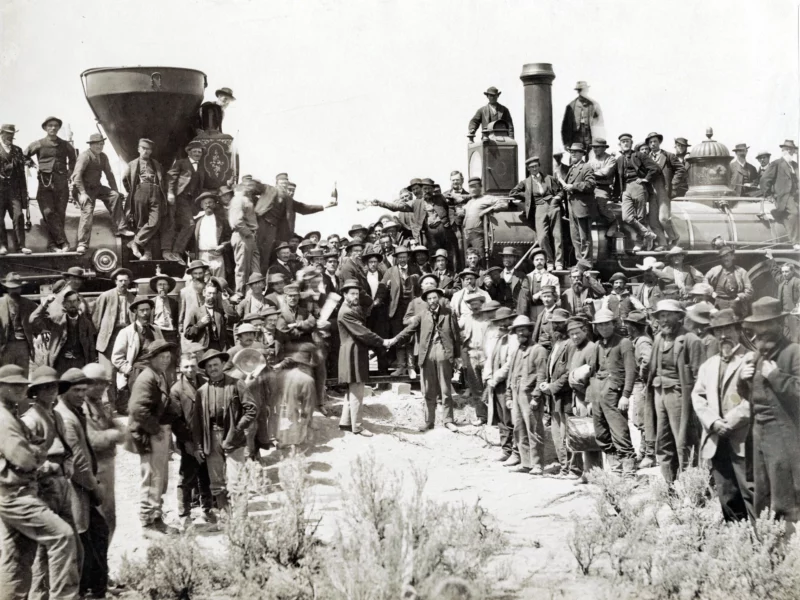
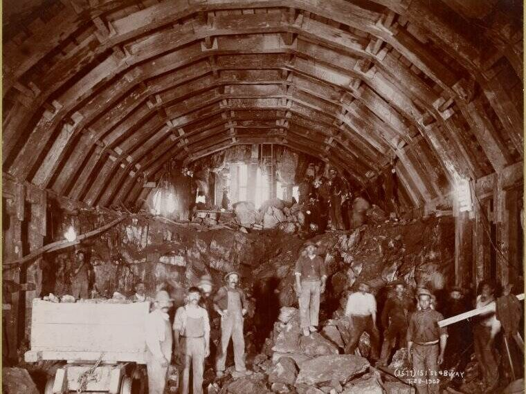

The Question
This project began while reading Patricia Park’s modern retelling of Charlotte Brontë’s Jane Eyre. It asks what becomes visible when we attend to the Asian American passengers who ride the New York subway in Re Jane.
The Purpose
The project began with accessibility. Resources about Asian American laborers—particularly their work in transportation—can be difficult to locate and connect. This website invites scholars and the public to consider the significance of Asian American labor and presence through an inquiry inspired by Re Jane.
The Process
Building on research about rhythm in Jane Eyre and Re Jane, the project expanded alongside the dissertation “Re-Claiming (Lost) Rhythms of Life in Victorian Female Characters,” which considers the rhythms female characters create through their engagement with objects.
A Women’s and Gender Studies Dissertation Fellowship Grant from Texas A&M University supported research travel to New York. That work informed the chapter “Recreating the Rhythm of Charlotte Brontë’s Jane Eyre within Patricia Park’s Re Jane.”
In Re Jane, the subway extends the liberating rhythm of Jane Eyre’s stagecoach into a modern space filled with ethnic minorities and working-class riders. It also recalls the history of the Transcontinental Railroad, whose well-known completion photograph excluded the Chinese American laborers central to its construction.

The Lack of Visibility
By bringing literary analysis into conversation with photographs, archives, museums, and transit history, the project examines how Asian American workers and riders have been made difficult to see—even when they have long been present in public and transportation spaces.
